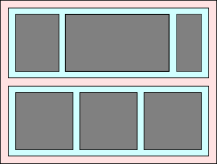
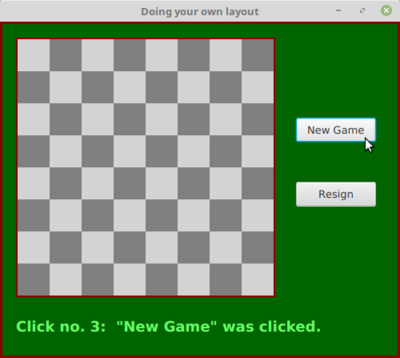
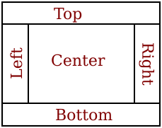
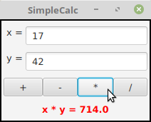
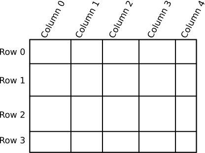

Basic Layout
Components are the fundamental building blocks of a graphical user interface. But you have to do more with components besides create them. Another aspect of GUI programming is laying out components on the screen, that is, deciding where they are placed and how big they are. You have probably noticed that computing coordinates can be a difficult problem, especially if you don't assume a fixed size for the drawing area. Java has a solution for this, as well.
Components are the visible objects that make up a GUI. Some components are containers, which can hold other components. In JavaFX terms, a container is a scene graph node that can contain other scene graph nodes as "children." The children of a container must be "laid out," which means setting their sizes and positions. It is possible for you to program the layout yourself, but layout is usually done automatically by the container. Different kinds of containers implement different policies for laying out their child nodes. In this section, we will cover some common types of JavaFX containers and their layout policies. In this section and the next, we will look at several programming examples that use components and layout.
Because a container is itself a scene graph node, you can add a container as a child of another container. This makes complex nesting of components possible, as shown in this illustration:

In this picture, a large container holds two smaller containers. Each of the two smaller containers in turn holds three components.
Every scene graph node has a minimum width and height, a maximum width and height, and a preferred width and height. A container consults these values when it is deciding how to lay out its children. (Some nodes, however, are not resizable, meaning not meant to be resized by a container during layout; for such components, the minimum, maximum, and preferred width and height are effectively equal to the component's actual size. Canvas and ImageView are examples of non-resizable components.) In general, a container will compute its own preferred size based on the components that it contains. The container's preferred size will allow each component that it contains to have at least its preferred size. The container will compute its own minimum and maximum sizes in a similar way, based on the minimum and maximum sizes of its children.
When setting the size of a child while doing layout, most containers will not set the width of the child to be less than the child's minimum width or greater than the child's maximum width, and the same for the child's height. This will be true even if it means that the child will overlap other components or will extend outside the container. (The part outside the container might or might not be shown, depending on the container.) This can also leave empty space in the container.
Resizable nodes, which includes controls and most containers, have instance methods for setting the minimum, preferred, and maximim width: setMinWidth(w), setPrefWidth(w), and setMaxWidth(w), where the parameter is of type double, with similar instance methods for the height. You can also set width and height values simultaneously with methods such as setMaxSize(w,h) and setPrefSize(w,h). For a container, the values set by these methods will override the values that would have been computed by the container based the children that it contains.
In JavaFX, containers that do layout are defined by the class Pane and its subclasses. (Pane and its subclasses are in package javafx.scene.layout.) Here, we look at a few of these layout classes, starting with using Pane directly.
Do Your Own Layout
Sometimes, you would like to do your own layout, instead of letting it up to one of the standard container classes. You can get complete control of the size and location of a node by setting it to be "unmanaged":
node.setManaged(false);When you do that, any container that contains node as a child will completely ignore node, as far as layout is concerned. It is your responsibility to set its location and (for resizable nodes) size. Note that an unmanaged node must still be placed inside a container for it to appear on the screen.
For our first layout example, we'll look at using the Pane class itself for the container. The Pane will manage the size, but not the location, of the managed nodes that it contains. That is, by using a Pane as container, you assume responsibility for setting the positions of the child nodes. The Pane will, by default, resize each child to its preferred size; if you want to take over that job too, you need to make the child unmanaged.
If node is any scene graph node that is unmanaged or is in a container that does not set the location of its child nodes, then you can set the location by calling
node.relocate( x, y );This puts the top left corner of the node at the point (x,y), measured in the coordinate system of the container that contains the node. Similarly, you can set the size of node, when that is allowed, by calling
node.resize( width, height )The width and height are measured in pixels.
We will look at an example that contains four components: two buttons, a label, and a canvas that displays a checkerboard pattern:

The program is just an example of layout; it doesn't do anything, except that clicking the buttons changes the text of the label. (I will use this example in Section 7.6 as a starting point for a checkers game.)
This example uses a Pane as the root node of the scene and as the container for the four components. This means that the program is responsible for setting the locations of the components, by calling their relocate() method. (Without that, they will all appear with their top left corners at the default location, (0,0)!) After looking at the result, I decided that I wanted the two buttons to have the same size and to be larger than their preferred sizes. For that to work, the buttons had to be made unmanaged. (Otherwise, calling their resize() method would have no effect because the pane would set them back to their preferred size.) Here is the code from the application's start() method that creates the four components and configures them, including setting their locations and sizes:
/* Create the child nodes. */
board = new Checkerboard(); // a nested subclass of Canvas
board.draw(); // draws the content of the checkerboard
newGameButton = new Button("New Game");
newGameButton.setOnAction( e -> doNewGame() );
resignButton = new Button("Resign");
resignButton.setOnAction( e -> doResign() );
message = new Label("Click \"New Game\" to begin.");
message.setTextFill( Color.rgb(100,255,100) ); // Light green.
message.setFont( Font.font(null, FontWeight.BOLD, 18) );
/* Set the location of each child by calling its relocate() method */
board.relocate(20,20);
newGameButton.relocate(370, 120);
resignButton.relocate(370, 200);
message.relocate(20, 370);
/* Set the sizes of the buttons. For this to have an effect, make
* the butons "unmanaged." If they are managed, the Pane will set
* their sizes. */
resignButton.setManaged(false);
resignButton.resize(100,30);
newGameButton.setManaged(false);
newGameButton.resize(100,30);The Pane that holds the components is the root node of the scene. The window for the program will be sized to be just large enough to hold the Pane at its preferred size. By default, a Pane computes its preferred size to be just large enough to show all of its managed children. Since I made the buttons unmanaged, they would not be included in the preferred size. To make the window large enough to include them (and to allow more empty space below the label), the program sets the preferred width and height of the pane:
Pane root = new Pane();
root.setPrefWidth(500);
root.setPrefHeight(420);The buttons, label, and board must still be added as children of the pane, to make them appear on the screen. This is done with the command:
root.getChildren().addAll(board, newGameButton, resignButton, message);Alternatively, they could have been added one by one using statements such as
root.getChildren().add(board);or the child nodes could have been given as parameters to the constructor:
Pane root = new Pane(board, newGameButton, resignButton, message);The pane still has to be made the root of the scene, the scene has to be placed in the stage, and the stage has to be configured and shown on the screen. See the source code, OwnLayoutDemo.java, for the complete story.
It's fairly easy in this case to get a reasonable layout. It's much more difficult to do your own layout if you want to allow for changes in the size of the window. To do that, you would probably write your own subclass of Pane (or of its superclass, Region), and override the layoutChildren() method, which is called by the system when a container needs to do layout, including when the container is resized. However, my real advice is that if you want to allow for changes in the container's size, try to find a standard container that will do the layout work for you.
BorderPane
A BorderPane is a subclass of Pane that is designed to display one large, central component, with up to four smaller components arranged around the edges of the central component. The five positions are referred to as center, top, right, bottom, and left. The meaning of the five positions is shown in this diagram:

Note that a border layout can contain fewer than five components, so that not all five of the possible positions need to be filled. It would be very unusual, however, to have no center component.
The BorderPane class has two constructors, one with no parameters and one that takes a single parameter giving the center child of the pane. Child nodes can be added to a BorderPane, pane, using the methods
pane.setCenter(node);
pane.setTop(node);
pane.setRight(node);
pane.setBottom(node);
pane.setLeft(node);Calling one of these methods with parameter null will remove the child from that position in the pane.
A BorderPane sets the sizes of its child nodes as follows, except that the width and height of a component is always restricted to lie between the minimum and maximum width and height of that component: The top and bottom components (if present) are shown at their preferred heights, but their width is set equal to the full width of the container. The left and right components are shown at their preferred widths, but their height is set to the height of the container, minus the space occupied by the top and bottom components. Finally, the center component takes up any remaining space.
The default preferred size of BorderPane is set just big enough to accommodate the preferred sizes of its (managed) children. The minimum size is computed in a similar way. The default maximum size of a BorderPane is unlimited.
For some subclasses of Pane, it is possible to tweak the layout of the children by applying things called layout constraints. For example, what happens in a BorderPane if a child cannot be resized to exactly fit the available space? In that case, the child has a default position within the available space. The center child is centered within the center space of the pane, the bottom child is placed at the bottom left corner of the bottom space in the pane, and so on. You can change this default placement using a static method from the BorderPane class:
BorderPane.setAlignment( child, position );where child is the child node whose position you want to tweak and position is one of the constants from the enumerated type Pos, from package javafx.geometry. Possible positions include Pos.CENTER, POS.TOP_LEFT, Pos.BOTTOM_RIGHT, and so on. (I find it strange that the alignment is set using a static method, but that's the way layout constraints work in JavaFX.)
You can also set a margin for any child of a BorderPane. A margin is empty space around the child. The background color of the pane will show in the margin. A margin is specified as a value of type Insets, from package javafx.geometry. An object of type Insets has four double properties, top, right, bottom, and left, which can be specified in the constructor:
new Insets(top,right,bottom,left)There is also a constructor that takes a single parameter, which is used as the value for all four properties. When used as a margin for a child node, the properties specify the width of the margin along the top, right, bottom, and left edges of the child. The margin can be specified using another static method:
BorderPane.setMargin( child, insets );For example,
BorderPane.setMargin( topchild, new Insets(2,5,2,5) );Remember that you can also tweak the appearance of a container using CSS (Subsection 6.2.5), which is the easiest way to set a border or background color for the container.
HBox and VBox
It is common to want to lay out a set of components in a horizontal row or in a vertical column. For that, the classes HBox and VBox can be used. HBox is a subclass of Pane that lays out its children next to each other, in a horizontal row. VBox is a subclass of Pane that lays out its children in vertical column. An HBox might be used as the bottom component in a BorderPane, making it possible to line up several components along the bottom of the border pane. Similarly, a VBox might be used as the left or right component of a BorderPane. Here, I will only discuss HBox, but VBox is used in an entirely analogous way.
An HBox, hbox, can be configured to leave a gap between each child and the next. The amount of the gap is given by a value of type double, which can be set by calling
hbox.setSpacing( gapAmount );The default value is zero. Children can be added to hbox in the same way as for Pane, that is, by calling hbox.getChildren().add(child) or hbox.getChildren().addAll(child1,child2,...). The HBox class has a constructor with no parameters, as well as one that takes the size of the gap as its first parameter, optionally followed by child nodes to be added to the box.
By default, an HBox will resize its children to their preferred widths, possibly leaving some blank extra space on the right. (The blank space would be there because the width of the HBox has been set to be larger than its preferred width.) If using the children's preferred widths would make the total width greater than the actual width of the HBox, it will shrink the children, within the limit of their minimum widths. The height of the children will be set to the full available height in the HBox, but, as always, within the limits set by their minimum and maximum heights.
Perhaps you would like the children to grow beyond their preferred widths, to fill the available space in an HBox. To make that happen, you need to set a layout constraint on each child that you want to grow, using a static method:
HBox.setHgrow( child, priority );The second parameter is a constant of the enumerated type Priority, from package javafx.scene.layout. The value will likely be Priority.ALWAYS, which means that the child will always get a share of the extra space. The child's width will still be limited by its maximum width, so you might need to increase that maximum to get the child to grow to the extent that you want.
As an example, suppose that an HBox contains three Buttons, but1, but2, and but3, and that you would like them to grow to fill the entire HBox. You need to set the HGrow constraint on each button. Furthermore, since the maximum width of a button is equal to its preferred width, you need to increase each button's maximum width. Here, I set the maximum width to be Double.POSITIVE_INFINITY, which means that the button can grow without any limit:
HBox.setHgrow(but1, Priority.ALWAYS);
HBox.setHgrow(but2, Priority.ALWAYS);
HBox.setHgrow(but3, Priority.ALWAYS);
but1.setMaxWidth(Double.POSITIVE_INFINITY);
but2.setMaxWidth(Double.POSITIVE_INFINITY);
but3.setMaxWidth(Double.POSITIVE_INFINITY);Any extra space will be distributed equally to the three buttons and added on to their preferred widths. This does not mean that they will all have the same width, because their original, preferred widths might not be equal. For a sample program in the next section, I wanted the three buttons in an HBox to be the same size. To accomplish that, I simply gave all three buttons the same large preferred width:
but1.setPrefWidth(1000);
but2.setPrefWidth(1000);
but3.setPrefWidth(1000);The HBox will then shrink the buttons proportionately to fit in the available space, and they all end up with the same width.
There are other ways to tweak the layout in an HBox. You can add a margin around any child using a static method similar to the one that is used for the same purpose in a BorderPane. You can set the HBox to use the preferred heights of its children, instead of stretching them to fit the height of the hbox by calling hbox.setFillHeight(false). You can say where in the hbox the children are placed, when they do not fill the entire hbox by calling hbox.setAlignment(position); the parameter is of type Pos with a default of Pos.TOP_LEFT. And, of course, you can apply CSS style properties.
As an example, we look at a GUI built entirely using HBox and VBox. The complete program can be found in SimpleCalc.java. The program has two TextFields where the user can enter numbers, four Buttons that the user can click to add, subtract, multiply, or divide the two numbers, and a Label that displays the result of the operation. Here is a picture of the program's window:

The root node for the window is a VBox containing four items, where the first three items are HBoxes. The first HBox contains two components, a Label displaying the text "x =" and a TextField. It is created with the commands
xInput = new TextField("0"); // Text input box initially containing "0"
HBox xPane = new HBox( new Label(" x = "), xInput );and it is later added as the first child of the VBox Note that the label is simply created with a constructor and added to the HBox, since there is no need to keep a reference to it.
The third HBox contains the four buttons. The buttons' default widths would be rather small. To make them fill the entire HBox, I add an hgrow constraint to each button and increase its maximum width. Here is how it's done:
/* Create the four buttons and an HBox to hold them. */
Button plus = new Button("+");
plus.setOnAction( e -> doOperation('+') );
Button minus = new Button("-");
minus.setOnAction( e -> doOperation('-') );
Button times = new Button("*");
times.setOnAction( e -> doOperation('*') );
Button divide = new Button("/");
divide.setOnAction( e -> doOperation('/') );
HBox buttonPane = new HBox( plus, minus, times, divide );
/* The four buttons need to be tweaked so that they will fill
* the entire buttonPane. This can be done by giving each button
* a large maximum width and setting an hgrow constraint
* for the button. */
HBox.setHgrow(plus, Priority.ALWAYS);
plus.setMaxWidth(Double.POSITIVE_INFINITY);
HBox.setHgrow(minus, Priority.ALWAYS);
minus.setMaxWidth(Double.POSITIVE_INFINITY);
HBox.setHgrow(times, Priority.ALWAYS);
times.setMaxWidth(Double.POSITIVE_INFINITY);
HBox.setHgrow(divide, Priority.ALWAYS);
divide.setMaxWidth(Double.POSITIVE_INFINITY);The last position in the VBox is occupied by a Label. Since there is only one component, it is added directly to the VBox; there is no need to wrap it in an HBox. However, in order to get the text in the label to appear in the center instead of at the left edge of the window, I needed to increase the maximum width of the label (so that the VBox will set its width to fill the entire available space). Furthermore, I had to set the alignment property of the label, to tell the label to place its text in the center of the label and not at the left:
answer.setMaxWidth(Double.POSITIVE_INFINITY);
answer.setAlignment(Pos.CENTER);One point of interest in this example, aside from the layout, is the doOperation() method that is called when the user clicks one of the buttons. This method must retrieve the user's numbers from the text fields, perform the appropriate arithmetic operation on them (depending on which button was clicked), and set the text of the Label to represent the result. However, the contents of the text fields can only be retrieved as strings, and these strings must be converted into numbers. If the conversion fails, the label is set to display an error message:
private void doOperation( char op ) {
double x, y; // The numbers from the input boxes.
try { // Get x from the first input box.
String xStr = xInput.getText();
x = Double.parseDouble(xStr);
}
catch (NumberFormatException e) {
// The string xStr was not a legal number.
// Show an error message, move the input focus
// to xInput and select all the text in that box.
answer.setText("Illegal data for x.");
xInput.requestFocus();
xInput.selectAll();
return; // stop processing when an error occurs!
}
try { // Get a number from the second input box.
String yStr = yInput.getText();
y = Double.parseDouble(yStr);
}
catch (NumberFormatException e) {
answer.setText("Illegal data for y.");
yInput.requestFocus();
yInput.selectAll();
return;
}
/* Perform the operation based on the parameter, op. */
if (op == '+')
answer.setText( "x + y = " + (x+y) );
else if (op == '-')
answer.setText( "x - y = " + (x-y) );
else if (op == '*')
answer.setText( "x * y = " + (x*y) );
else if (op == '/') {
if (y == 0) { // Can't divide by zero! Show an error message.
answer.setText("Can't divide by zero!");
yInput.requestFocus();
yInput.selectAll();
}
else {
answer.setText( "x / y = " + (x/y) );
}
}
} // end doOperation()The complete source code for this example can be found in SimpleCalc.java.
GridPane and TilePane
Next, we consider GridPane, a subclass of Pane that lays out its children in rows and columns. Rows and columns are numbered, starting from zero. Here is an illustration of a typical grid with 4 rows and 5 columns:

Note that the rows are not necessarily all the same height, and columns are not necessarily all the same width.
It is possible to leave gaps between rows or between columns, where the background of the GridPane will show. If grid is the GridPane, set the size of the gaps by calling
grid.setHGap( gapSize ); // gap between columns
gris.setVGap( gapSize ); // gap between rowsYou can specify the row and column where a child is to be placed when you add the child to the GridPane:
grid.add( child, column, row );(Note that the column number is specified first.) In fact, it is possible for a child to span several rows or several columns in the grid. The number of columns and number of rows that the child should occupy can be given as additional parameters to the add() method:
grid.add( child, column, row, columnCount, rowCount );The number of rows and number of columns in the grid are determined by the positions of the children that have been added to it.
A GridPane will resize each child to fill the position or positions that it occupies in the grid (within minimum and maximum size limits). The preferred width of a column will be just large enough to accommodate the preferred widths of all the children in that column, and similarly for the preferred height. There are several ways to tweak this behavior, but here I will only mention that the actual column width and row height can be controlled.
A GridPane can have a set of column constraints and a set of row constraints that determine how the column width and row height are computed. The width of a column can be computed based on the widths of its children (the default), it can be set to a constant value, or it can be computed as a percentage of available space. Computation of row height is similar. Here is how to set constant row heights for a gridpane that has four rows:
gridpane.getRowConstraints().addAll(
new RowConstraints(100), // row 0 has height 100 pixels
new RowConstraints(150), // row 1 has height 150 pixels
new RowConstraints(100), // row 2 has height 100 pixels
new RowConstraints(200), // row 3 has height 200 pixels
);In this case, the total height of the gridpane is the same, no matter how much space is available for it.
When percentages are used, the grid pane will expand to fill available space, and the row height or column width will be computed from the percentages. For example, to force a five-column gridpane to fill the available width and to force all columns to have the same size:
for (int i = 0; i < 5; i++) {
ColumnConstraints constraints = new ColumnConstraints();
constraints.setPercentWidth(20); // (there is no constructor that does this)
gridpane.getColumnConstraints().add(constraints);
}If the percentages add up to more than 100, then they will be decreased proportionately. In the example, setting all five percentages to be 50 would have the same effect as setting them all to be 20. Things can get more complicated than this, but these are probably the most common cases.
For an example of using a GridPane see the source code of SimpleColorChooser.java from Subsection 6.2.1. You should now be able to read and understand the entire program.
If you would like a grid in which all the rectangles are the same size, you can use a TilePane. A TilePane arranges equal-size "tiles" in rows and columns. Each tile holds one of the child nodes; there is no way to spread out a child over several tiles.
A TilePane, tpane, has a preferred number of rows and a preferred number of columns, which you should set by calling
tpane.setPrefColumns(cols);The preferred number of columns will be used if the TilePane is shown at its preferred size, which is the usual case. However, that is not necessarily true if it is shown at a different size; in that case, the number of columns will be determined by the width of the available space. The number of rows will be determined by the number of child nodes that are added to the TilePane. The children will be laid out in order, filling the first row from left to right, then the second row, and so on. It is not required that the last row be completely filled. (All of this is true if the "orientation" of the TilePane is horizontal. It is possible to change the orientation to vertical. In that case, the number of preferred rows is specified instead of the number of columns. However, I have found little reason to do that.)
It's very common to have a TilePane in which the number of preferred columns is one. In that case, it is similar to a VBox. It is also common for the number of columns to be equal to the number of child nodes, and in that case, it is similar to an HBox.
At its preferred size, the width of each tile is equal to the largest preferred width of any child node, and similarly for the height. The TilePane will resize each child to completely fill its tile, except that it will not make a child larger than its maximum width and height.
There is a TilePane constructor with no parameters and one that takes a list of any number of children to be added to the pane. You can also add children later using one of
tpane.getChildren().add(child);
tpane.getChildren().addAll(child1, child2, ...);You can specify the size of a horizontal gap that will be placed between columns and of a vertical gap that will be placed between rows. The background of the pane will show through the gaps. The gap amounts can be specified in the constructor (optionally followed by a list of children):
TilePane tpane = new TilePane( hgapAmount, vgapAmount );or they can be specified later with tpane.setHgap(h) and tpane.setVgap(v).
For an example that uses TilePanes for layout, see Exercise 6.7.